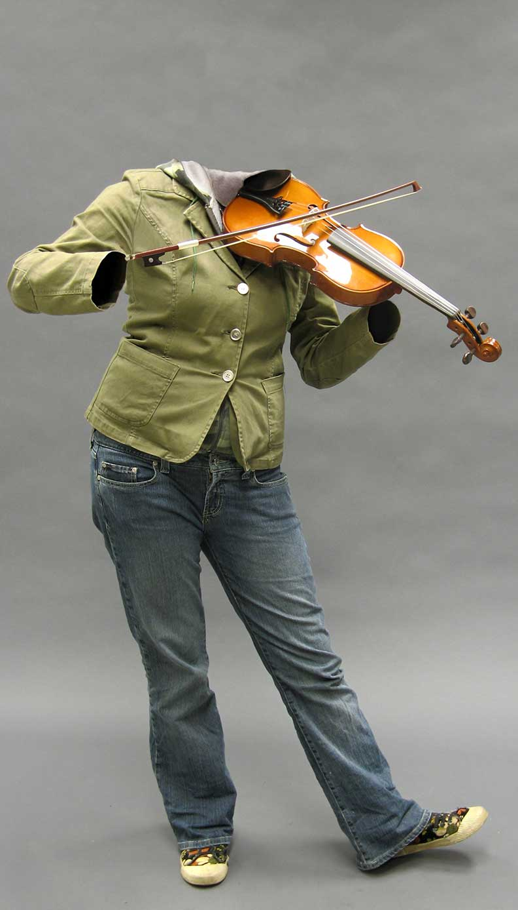
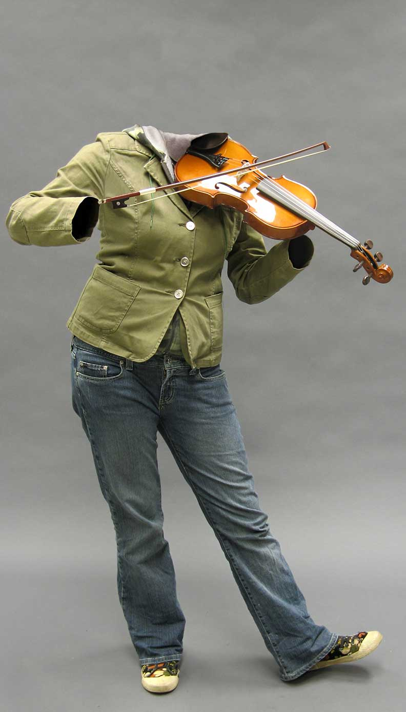

{Invisible Violinist: Photo Manipulation, Painting;}
I won the Grand Prize at the Excellence in Computer Graphics Awards for this piece. I had a blast in Photoshop creating this illusion.
I won the Grand Prize at the Excellence in Computer Graphics Awards for this piece. I had a blast in Photoshop creating this illusion.
